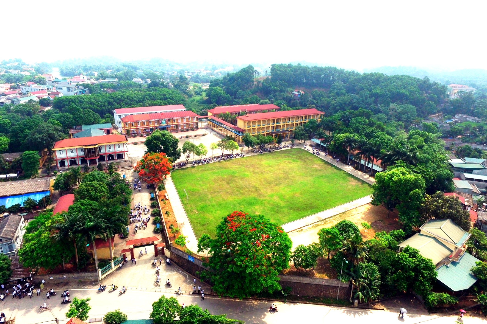
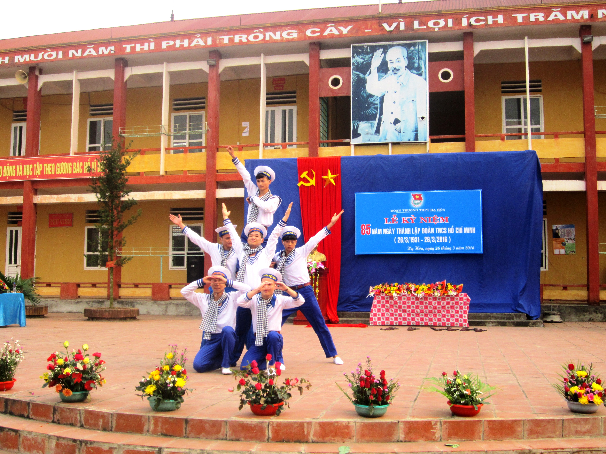

Giới Thiệu về Trường THPT Hạ Hòa
Trường THPT Hạ Hoà (nguyên là trường cấp 3 Hạ Hoà) được thành lập tháng 8/1961. Trường ra đời vào năm đầu của kế hoạch 5 năm lần thứ nhất trong công cuộc xây dựng CNXH, thoả nguyện lòng mong mỏi, hiếu học của nhân dân Hạ Hoà bấy lâu nay. Hai năm đầu ghép chung trường cấp 2 với 138 học sinh. Đến 1963, trường được tách ra thành 1 trường độc lập: Trường cấp 3 Hạ Hoà.
Lịch sử ra đời và phát triển của trường THPT Hạ Hoà- Phú Thọ Trải qua quá trình xây dựng và phát triển : 6 lần sơ tán trong chiến tranh chống Mỹ cứu nước (1964- 1975), 4 lần chia tách, bão lụt làm sập 22 lớp học tranh tre và biết bao khó khăn khác, nhà trường vẫn vượt lên để vững vàng, phát triển và trưởng thành.
Lịch sử ra đời và phát triển của trường THPT Hạ Hoà- Phú Thọ Trải qua quá trình xây dựng và phát triển : 6 lần sơ tán trong chiến tranh chống Mỹ cứu nước (1964- 1975), 4 lần chia tách, bão lụt làm sập 22 lớp học tranh tre và biết bao khó khăn khác, nhà trường vẫn vượt lên để vững vàng, phát triển và trưởng thành.
Những chặng đường đầy khó khăn: ác liệt trong chiến tranh, thiếu thốn trong cuộc sống, chống chọi với thiên nhiên bão lũ, Trường THPT Hạ Hoà đã tạo lập cho mình một truyền thống tốt đẹp. Đó là: Đoàn kết, vượt khó vươn lên để hoàn thành xuất sắc nhiệm vụ, một bản lĩnh làm việc, học tập vững vàng… Thực hiện được lời dạy của Bác: “ Dù khó khăn đến đâu cũng phải tiếp tục thi đua dạy tốt, học tốt”.
Những năm trở lại đây (Từ 1996 – khi có Nghị quyết TW2 khoá VIII) , được sự quan tâm của Đảng bộ, chính quyền và nhân dân địa phương, của Sở Giáo dục và Đào tạo, Tỉnh uỷ, HĐND, UBND tỉnh Phú Thọ, trường có bước phát triển vượt bậc cả về quy mô, số lớp, số học sinh và cả về chất lượng giáo dục – đào tạo. Từ 13 lớp (1995 – 1996) với 605h/s đến nay trường đã có 25 lớp với 1161 h/s. Cơ bản đáp ứng nhiệm vụ: Nâng cao dân trí, đào tạo nhân lực, bồi dưỡng học sinh vào các trường Đại học, cao đẳng cho con em nhân dân 20 xã phía bắc huyện Hạ Hoà. Bên cạnh việc “dạy chữ”, nhà trường đã tổ chức học 3 nghề phổ thông cho học sinh đó là : Nghề làm vườn, nghề điện dân dụng và phổ cập tin học.
Từ ngôi trường tranh tre, gỗ, lá và nhà cấp 4, đến nay trường đã tầng hoá đạt 80% có đủ các phòng bộ môn, thư viện, thí nghiệm, phòng Tin học… cơ ngơi đã khang trang theo hướng “kiên cố hóa, hiện đại hóa, chuẩn hóa”.
Vốn là một trường Luôn coi trọng “kỷ cương – nề nếp”, thực hiện phương châm: “ dạy chữ, dạy nghề để dạy làm người” và “ Học để biết, học để làm, học để làm người, học để đối xử với nhau” (UNEXCO). Vì vậy, giáo dục đạo đức và nâng cao chất lượng văn hoá luôn được đặt lên hàng đầu, Cấp uỷ, BGH, Hội đồng sư phạm nhà trường qua các thời kỳ luôn coi đó là sự sống còn, là thước đo lòng tin của nhân dân đối với trường. Hàng năm, đạo đức tốt của học sinh đạt tỷ lệ trên dưới: 60%, loại trung bình còn dưới 1%, không có loại yếu. Điều đáng ghi nhận là nhiều năm nay trường không có học sinh nghiện hút và vi phạm các tệ nạn xã hội. Chất lượng văn hoá tăng đều qua các năm. học sinh tốt nghiệp phổ thông thường đạt 98%. Học sinh đỗ vào các trường ĐH, CĐ đạt 22 – 25%, xuất hiện nhiều học sinh đỗ vào các trường đại học tốp trên, có h/s đỗ thủ khoa. Học sinh tiên tiến đạt 28 – 30%, (trong đó giỏi 1%) tỷ lệ lưu ban dưới 1,2%. Các hoạt động giáo dục ngoài giờ lên lớp được tổ chức thường xuyên như các chương trình ngoại khoá, tổ chức các sân chơi, tổ chức văn nghệ, TDTT, các câu lạc bộ sở thích, tham gia các hoạt động xã hội…. Những hoạt động ấy đã tạo ra những lứa học sinh toàn diện vừa có đạo đức Cách mạng, vừa có tri thức văn hoá, năng động, bản lĩnh, tự chủ, sáng tạo, thích ứng với hoàn cảnh. Những yêu cầu cần thiết cho một công dân ở thế kỷ XXI.
Chính nhờ những nỗ lực của đội ngũ sư phạm nhà trường nên trường đã đạt các danh hiệu thi đua sau:
– Được Thủ tướng Chính phủ tặng bằng khen.
– Được Nhà nước tặng thưởng Huân chương Lao động hạng 3
– Liên tục được công nhận trường tiên tiến xuất sắc – UBND Tỉnh tặng bằng khen.
Các đoàn thể: – Chi bộ Đảng luôn đạt trong sạch vững mạnh đã được nhận cờ cơ sở Đảng trong sạch vững mạnh 5 năm liên tục của BTV Tỉnh uỷ.
– Công đoàn, Đoàn thanh niên nhà trường liên tục đạt danh hiệu cơ sở vững mạnh.
Hơn 40 năm là khoảng thời gian không dài so với lịch sử dân tộc, song bước đường xây dựng và trưởng thành của trường Trung học phổ thông Hạ Hoà là chặng đường hết sức quan trọng và vinh quang. Trải qua bao khó khăn, thử thách, đến nay Nhà trường đang vươn tới một tầm cao mới, không ngừng nâng cao chất lượng dạy và học, quyết tâm phấn đấu đạt Trường chuẩn Quốc gia vào năm 2010. Nối tiếp truyền thống “dạy tốt, học tốt” thầy trò trường Trung học phổ thông Hạ Hoà hôm nay quyết tâm phấn đấu, viết tiếp những trang sử vẻ vang của Trường, để Trường thực sự là cái nôi đào tạo nhân lực, bồi dưỡng nhân tài cho quê hương, đất nước, đáp ứng lòng mong mỏi, tin yêu của cấp uỷ, chính quyền và nhân dân các dân tộc trong huyện.
Lịch sử không phải là những gì đã diễn ra trong quá khứ mà nó còn phát triển một cách biện chứng trong hôm nay và ngày mai. Mỗi thế hệ cán bộ giáo viên và học sinh qua các thời kỳ của trường THPT Hạ Hoà luôn nhớ về mái trường thân yêu như nhớ về mái nhà đã từng chắp cánh cho bao tâm hồn, bao thế hệ.